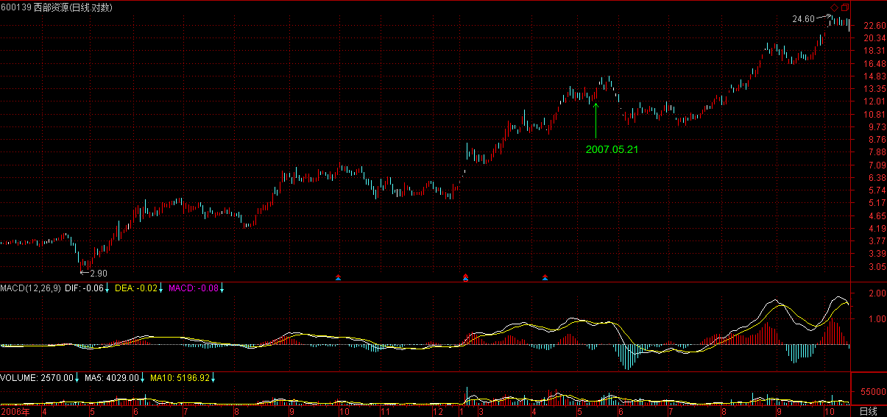
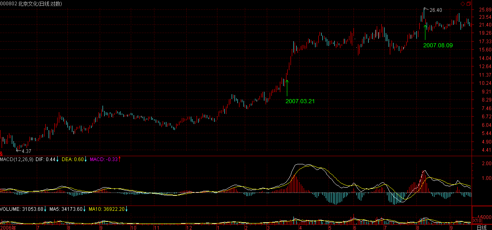

(2007-05-23 08:47:18)
由于新来的人越来越多，请都先把课程认识从头看一遍再讨论问题。
另外，在分析一定要搞清楚中枢的递归定义，这是基础中的基础，连这都搞不清楚，没有彻底明白，那根本就不可能继续下去。
【韶山映山红】首先，“要搞清楚中枢的递归定义，这是基础中的基础”。】
【韶山映山红】若禅精舍（陈秋明）：
何止是新来的人，前面的基础问题没搞清楚，天天各种途径找别人对后面内容解读的老人，一抓一大把。走势类型不清楚要搞同级别分解的、买卖点不清楚要搞板块轮动的、线段没搞清楚就把笔作为中枢次级别构件的，急躁而求速成的心理普遍存在，这不仅是在缠论上，在各行各业的每一个领域，都不乏这样的人存在，所以精英历来都是属于少部分的专属称号。】
再者，关于级别的问题，如果想不明白，可以当成用不同倍数的显微镜去看一滴水，由此当然会看出不同的精细度，级别之与走势也一样。【韶山映山红】准确的说，级别是递归出来的，并不很像是“用不同倍数的显微镜去看”，恰恰相反，选择Ｋ线图周期做级别才更像是“用不同倍数的显微镜去看”。这个比喻不贴切，可能反而误导了一些人。】
一个最简单的例子，三个5分钟级别的走势重叠构成一个30分钟中枢，站在30分钟级别的角度，5分钟的走势都可以看成就是一个线段，没有内部结构的，这线段的高低点就是对应5分钟走势的高低点；【韶山映山红】“这线段的高低点就是对应5分钟走势的高低点”，没有内部结构的线段就是两点一线的线段，他的高低点就是两端点，换句话说，在5分钟同级别分解的制图作业上，对5分钟走势划分要做标准化处理。】而站在5分钟的次级别1分钟上看，每段5分钟的高低点都不绝对是在5分钟走势的结束或开始位置，【韶山映山红】观察5分钟走势类型的1分钟走势的组成情况，5分钟走势并不一定是起止于最高最低点，也可能中间发生过低级别大幅度的波动，即使在端点，也有不新高新低的转折点，比如第二类买卖点突破第一类买卖点的情况。】当然，按1分钟的级别重新用结合律重新组合，总能让高低点分别在开始或结束的位置，【韶山映山红】这里说的是按照结合律重新组合，而不是简单的做一下移动。】但站在分笔的级别上，这又不行了。【韶山映山红】这里1分钟的低一个级别是“分笔的级别”。】为什么？因为当我们用1分钟的级别重新组合时，其实就先把分笔上的级别都看成没有结构的线段了。【韶山映山红】用高低点的处理问题来阐述不同级别的显微镜看到的不同的细节。】
这是十分自然的，就像我们研究猴子的行为时，如果还考虑其中的每个细胞里包含的分子里的原子里的电子的走势问题，那猴子就不是猴子了。【韶山映山红】研究猴子的行为，把猴子看作是独立的个体，可以看次级别的内部结构，也就是器官这个级别。细胞的内部更低级别的研究就偏离猴子行为的研究了。】
所以，这个原则是必须明确的，例如你决定用30分钟来操作、观察时，其实就已经先假定把所有完成的5分钟走势都看成线段了。【韶山映山红】“这个原则”的核心思想就是，把次级别走势看成一个没有内部结构的线段。30分钟操作级别，5分钟级别走势都视为没有内部结构的线段，做标准化处理。】
【韶山映山红】首先，“要搞清楚中枢的递归定义，这是基础中的基础”。 再者，“关于级别的问题”，要想明白。】
【韶山映山红】若禅精舍（陈秋明）：
一般都不需要让级别的安排像本段一样，主要是缺少腾挪的空间。30分钟的操作系统，正常还是要去考察五分钟级别走势的，而五分钟走势的次级别也就是一分钟级别走势类型，就当成没有内部结构的线段。这在后面的笔与线段里面是相同的，为什么笔和线段不能操作，就是因为这二者是用来构建最小级别走势类型的元素，是被看成是没有内部结构的。当然线段也不是绝对不能操作，要看线段的具体结构，但在30分钟的操作系统视角中，连一分钟都不需要操作了，何况线段？
实践出来比较好的操作系统，是确定一个固定的操作级别，不妨就用30分钟级别举例，围绕30分钟这个操作级别，需要考察的有：日线、30分钟、5分钟、1分钟这四个级别，其中日线是用来考察30分钟级别走势类型在高级别走势结构中的位置，相同的30分钟级别走势结构，在日线走势类型的不同阶段，其市场意义有区别，例如是在日线的第三买点和第三卖点，后面的操作需要注意的关键点就会有区别。而5分钟是用来考察30分钟走势类型的内部结构，保证至少有一个级别的区间套可以考察，否则30分钟级别走势类型的当下演化就会缺少一个可以用来当下直观的参考，精确度不够。1分钟级别是用来辅助的，用于一些趋势比较激烈的5分钟走势段，通常不看也可以了。
操作级别前后各一个级别，构成围绕操作级别的三重考察系统，这样的安排基本照顾到了操作所需要分析的所有因素，又不至于太过繁琐。例如日线的操作，就只看周线、日线、30分钟就可以了。】
注意，这里和区间套定理是没有冲突的，当30分钟进入背驰段，为了更精细的定位，用倍数更大的显微镜去看这段走势，这是极为自然的。【韶山映山红】分析30分钟走势的时候只看次级别的构成，分析具体的细节的时候还看更低级别的构成。】只要知道该在什么时候用什么倍数的去看就可以。【韶山映山红】不是固定只看某个级别，而是混合着看。】
再例如，在看30分钟的第三买卖点时，由于要涉及次级别5分钟的判断问题，所以那时候就不能光用30分钟级别的显微镜，同样要转换成5分钟的。【韶山映山红】30分钟级别的显微镜看到5分钟为止，然后换成5分钟的显微镜看1分钟的结构。】
但无论这些显微镜如何转换，一个原则是不变的，就是当你用一个级别的显微镜时，就等于先把次级别的当成线段了，也就是说次级别不在该级别的观察中。【韶山映山红】原则：分析某级别走势类型的时候，先把次级别的当成没有内部结构的线段。 这里有一个前提，就是次级别的走势都是一个一个独立的清晰划分。那么，次级别走势是怎么划分的？做次级别分解的时候，那些升级中枢如何拆分？做次级别的同级别分解吗？★可以做个专题，以后研究。】
当然，有这最精细最严格的方法，就是从最低级别的分笔中逐步组合分析上来，这样就不存在上面的问题，【韶山映山红】严格递归的走势划分，每一个级别都是清晰的，一目了然，也就不用考虑哪个地方粗看、哪个地方细看。】但这样太累，而且毫无必要。【韶山映山红】1，太累，就看不了那么多，就影响关注的范围。2，毫无必要，是因为很多细节可以不关注。怎么判断哪些是必要的？★可以做个专题，以后研究。】
理论是用来用的，只要不违反理论的基础与绝对性，当然要选择更简单的用法。【韶山映山红】理论的基础是自同构结构的结合律。理论的绝对性是完全分类。】对这个问题，必须要了解，否则一下30分钟、一下1分钟、一下又年线，非把自己换晕了。
【韶山映山红】若禅精舍（陈秋明）：
理论是用来用的，不能落实到实践中来，什么理论都是扯淡。很多人都搞不清楚这一点，每天研究“茴”字有多少种写法，关于这个，真正的高手当然可以知道它有多少种写法，但从来不回去纠结这种问题。对照到缠论中来，比较典型的就是去搞从日线图上可以分辨五分钟中枢的技巧，以及对一些线段的绝对精确，这些其实都没有必要。
但这种最精细最严格的方法，从最低级别的分笔中逐步递归上来，这样的练习多了之后，对盘中的当下分析是很有好处的。但不是文中说的分笔，那太夸张了，一般从一分钟走势类型或者线段向上递归，然后根据当下的走势给予可能的分类，重复的次数多了，像上面说的从日线图中分辨五分钟中枢这种能力，自然而然就可以形成。一幅图打开，一两秒内就知道是不是自己的菜，这种能力就是这么来的，另外还有当下如何去分解，存在哪些可能，不同的可能对应着哪些触发条件，递归练习对这方面的能力培养很有好处。
但并不是说盘中就要去这样递归，打开一个新的股票走势图，考察能不能操作，现在是不是买点，还要去一分钟分笔分段递归上来，买卖点早就过了。特别在短线中，一两分钟之内的价格波动就足够让你失去介入的机会，递归的再准确又有何用？】
【韶山映山红】线段进化史02
这一课里是原文第一次出现真正意义上的“线段”，这个时候的线段就是次级别走势，强调的是忽略内部结构。】
其次，对于背驰与盘整背驰，前者是有着最基础意义的，【韶山映山红】背驰是有着最基础意义的。背驰的意义就是走势类型终结的标志，关系到转折与切换。】而后者，只是利用前者相应的力度分析方法进行的一个推广用法，主要用在与中枢震荡相关的力度比较中。【韶山映山红】盘整背驰只是力度分析方法的一个推广应用，主要用在与中枢震荡相关的力度比较中。abc线段类盘整背驰必然形成中枢，是形成中枢的震荡的考量；a+A中枢震荡盘整背驰是中枢形成后震荡是否延续的考量。a+A+b盘整背驰。★可以做个专题，以后研究。】
注意，a+B+c中，a和c的盘整背驰，其实都可以看成是B的中枢震荡，【韶山映山红】“可以看成”，也就是说，其实并不是。因为c已经包含B中枢的第三类买卖点，B中枢的延伸已经结束。】虽然a存在时，B还没出现，但也不妨这样看。【韶山映山红】a先于B形成，并不是B中枢的震荡，在分析B中枢震荡的角度“可以看成”是B中枢的一种离开。】
【韶山映山红】这里是唯一的一次写成“a+B+c”的格式。前面课程几次都写成了“a+B+b”，是笔误？还是有什么不同？★以后研究。】
【韶山映山红】首先，“要搞清楚中枢的递归定义，这是基础中的基础”。 再者，“关于级别的问题”，要想明白。 其次，搞明白“背驰与盘整背驰”。】
至于第一、二、三买卖点，归根结底都可以归到第一类买卖点上，只是级别不同。【韶山映山红】第一、二、三买卖点都可以归到某个级别的第一类买卖点。】
那么为什么不就说第一类买卖点，因为这样，就会涉及不同的级别，等于同时用不同级别的显微镜去看，太乱，实际用起来更乱，【韶山映山红】虽然同时用不同级别的显微镜，实际上因为观察点不同，反而会丢失一些信息。】因为不同级别的买卖点意义是不同，【韶山映山红】不同级别的买卖点预示着不同级别的演化。】因此要同一在一个级别上研究，这个才有三类买卖点的分别。【韶山映山红】统一在一个级别上研究，才有三类买卖点的分别，才有三类买卖点的关联，否则，第二、三类买卖点是无法与第一类买卖点平起平坐的。】
当然，最充分的操作，就是按分笔的买卖点，这样所有波动的最细微波动都可以把握了，但这在实际中是不可能的，人需要反应的时间、有交易成本等等。因此，忽略掉某些波动，按更大的级别同一操作，就是客观条件的必然要求。【韶山映山红】按更大的级别操作，就是忽略掉某些波动。如何选择忽略的对象呢？★可以做个专题，以后研究。】
本ID的理论可不是什么先验理论，而是根本客观条件充分反映当下可能的充分可操作性的理论，这必须要彻底明确。因此，三类买卖点，都不能偏废，不能说哪一个更重要，站在同一级别上，三者都重要。
【韶山映山红】若禅精舍（陈秋明）：
在某个固定级别上，三类买卖点都是有意义的，而在不同级别走势的同构性中，无论什么买点其实都是某级别的第一买点。
趋势背驰和盘整背驰，对应的后续分类有根本上的不同，趋势的比较标准，后续分类相对少一些，盘整背驰就多了。盘整背驰后有是否构成第三买卖点的区别，而在第三买卖点出现后又存在是否背驰式上涨的区别。对于新学习的人而言，最好能够在纸上去以树状结构的思维导图去把后续走势进行完全分类，这对切实理解理论有一定帮助，这方面的分类熟悉了，操作的时候才能熟练的运用。】
第一类买卖点，就是该级别的背驰点，这足以应付最大多数的情况，【韶山映山红】第一类买卖点的意义就是该级别走势类型的转折。】
但有一种情况是不可以的，就是前面反复强调的小级别转大级别的情况。为什么？因为当小级别背驰时，并触及该级别的第一类买卖点，所以就无须操作。【韶山映山红】并未触发。】对这种情况，就需要第二类买卖点来补充。【韶山映山红】本级别没有背驰，不算第一类买卖点，但是小级别背驰引发本级别的转折，我们只能后知后觉。出现小级别第一类买卖点，没有出现大级别第一类买卖点，因此没有触发操作机制，不可能在第一类买卖点的地方操作，这时候不是任意位置出逃，而是等待第二类买卖点。】
该买卖点，不是专门针对这小转大情况的，【韶山映山红】第二类买卖点不是专门针对小转大情况的，只不过小级别背驰走出了本级别转折的形态，跟第一类买卖点一样，是被形成的。】
一般说，高点一次级别向下后一次级别向上，如果不创新高或盘整背驰，都构成第二类卖点，而买点的情况反过来就是了。【韶山映山红】但凡是不创新高、或创新高同时盘整背驰，都可以作为二卖先出来。创新高但是盘整背驰，也是二卖，所以二卖有可能高于一卖。】
【韶山映山红】这里有个很重要的前提假设，就是“高点”。也就是说，先要走出第一类买卖点的形态来。换一句话说，第三类买点之后的高点之后，才有小转大的分析。★】
【韶山映山红】这里的创新高同时盘整背驰为什么是二卖？★因为，一卖要有走势类型级别的背驰的，a+A+b盘整背驰、a+A+b+B+c趋势背驰，这两种情况下，才有本级别第一类买卖点。举例说，中枢离开段，第一段不背驰的情况下，第三段的线段类盘整背驰都是第二类买卖点。线段类盘整背驰必然回跌，然后形成一个同级别中枢。但不一定是走势类型的中枢，也可以就此转折。所以，这样的二卖之后，完全可以是继续原方向的趋势延伸，所以，这个二卖本身就是次级别操作。那么，前面那个走势类型的一卖在哪里呢？既然说二卖比一卖高，那么，前面那个高点就是划分走势一卖啊。小转大的那个点就是走势类型的分界点。】
【韶山映山红】没有第一类买卖点，需要第二类买卖点来补充，说明这种小级别转大级别的情况，有一个前提，就是已经有了本级别走势类型，而不是随意的三段。换句话说，已经摆脱了中阴阶段。那么，如果是盘整走势类型，就已经有第三类买卖点了。也就是说，新高盘背发生在a+A+b之后。那么，b是次级别线段类趋势？★以后研究。】
所以，在有第一类买卖点的情况下，第一类买卖点是最佳的，第二类只是一个补充；【韶山映山红】是补充，也是确认。】但在小级别转大级别的情况下，第二类买卖点就是最佳的，因为在这种情况下，没有该级别的第一类买卖点。【韶山映山红】复盘的时候可以找到第一类买卖点这个点，理论上的点，走势类型的分界点，但不是操作的买卖点。】
【韶山映山红】若禅精舍（陈秋明）：
对于低点来说，一个同级别的、不创新低或者盘整背驰的下跌，都构成第二买点，第二卖点的情况就是反过来。这属于标准第二买点的推广应用，并不一定就是在趋势背驰后才能有，这样的推广使该买卖点的意义能够扩散到几乎所有走势类型中，这当然是必要而且合理的。
小转大的情况下，没有该级别的第一买点，所以只能用第二买点来补充。其实在操作中，除了那种非常标准、有数个区间套顶底背驰的位置，其他情况根据第二买卖点来操作只会更加稳妥，而且让出去的上涨空间并不大，因为一段走势刚开始的回升段往往都不会很强。
在第三买点的操作中，小转大的情况是最常见的，通常都是日线级别的第三买点。一段上涨突破中枢后，向下的回调走势刚开始可能跌的慢些，然后在前面上涨中的某个节点附近构造一个中枢，再以更大力度下跌，这种更大力度的下跌在盘中的表现往往可以 】
第二类买卖点，站在中枢形成的角度，其意义就是必然要形成更大级别的中枢，因为后面至少还有一段次级别且必然与前两段有重叠。【韶山映山红】这个“更大级别的中枢”是相对形成第二类买卖点的线段类盘整背驰的三段走势而言的。其实就是本级别中枢。如果发生了转折，就不一定是走势类型的中枢。】
【韶山映山红】“必然要形成更大级别的中枢”。这一点，也可以作为第二类买卖点的判断依据吗？★以后研究。】
而对于第三类买卖点，其意义就是对付中枢结束的，【韶山映山红】结束中枢延伸，也宣告这个级别的中枢结束。】一个级别的中枢结束，无非面对两种情况，转成更大的中枢或上涨下跌直到形成新的该级别中枢。【韶山映山红】第三类买卖点之后的离开，如果再次返回中枢就会扩展成更高级别中枢。或者新生。第三类买卖点之后的离开不再返回，就会有中枢新生，新生的结果不都是趋势，也可能是同级别转折。】第三类买卖点就是告诉什么时候发生这种事情的，【韶山映山红】告诉什么时候要面对未来的两种情况。】而在第二、三买卖点之间，都是中枢震荡，【韶山映山红】中阴阶段的中枢震荡。】这时候，是不会有该级别的买卖点的，因此，如果参与其中的买卖，用的都是低级别的买卖点。【韶山映山红】二卖出，参与中枢震荡的回补操作，或者更多的参与中枢震荡的其他操作，都属于降级操作。如果不降级操作，就是下图这样的本级别二卖+本级别三买，就要忍受追高的三买，同时，可以避免低位的三卖。盈亏同源。】
【韶山映山红】一买必然是某级别趋势之后的背驰转折点，盘整之下没有严格意义上的一买，即使出现与下跌趋势最后一个中枢一样的结构，也不能保证必然有该级别的转折，但是盘整之上的一卖要小心。二买跟着一买走，二卖也跟着一卖走。三买三卖只管中枢，不管走势类型。】
实际操作中，最干脆的做法，就是不参与中枢震荡，只在预先设定的买卖点上买卖。【韶山映山红】就是三类买卖点都可以介入，然后退出位置包括：次级别线段类盘整背驰、次级别线段类趋势背驰、本级别一卖或者二卖。】
但对于大资金来说，或者对于有足够操作时间和熟练度的资金来说，中枢震荡当然是可以参与的，而且如果中枢级别足够，其产生的利润往往更大而且稳定。【韶山映山红】中枢震荡的次级别打短差。】
而在趋势的情况下，一般小级别的买卖点并一定要参与，【韶山映山红】笔误。并不一定要参与。少了一个“不”字。】但如果技术特别好或大资金，同样可以参与，这只是为了提高资金的利用率，加快成本变0或增加筹码的过程。【韶山映山红】中枢移动过程中的次级别打短差。】
当然，这种小级别的参与，就与该级别能容纳的资金量有关，这就涉及仓位调配控制的问题了，这问题以后再说。
【韶山映山红】阿娇博客的转载，不知来源。
第三类买卖点再分辨（思考贴9）(2009-01-05 12:00:58)
教材和缠回复中关于第三类买卖点内容：
1、第三类买卖点定理：一个次级别走势类型向上离开缠中说禅走势中枢，然后以一个次级别走势类型回试，其低点不跌破ZG，则构成第三类买点；一个次级别走势类型向下离开缠中说禅走势中枢，然后以一个次级别走势类型回抽，其高点不升破ZD，则构成第三类卖点。
2、离开与回抽均必须次级别的“2007-05-22 答疑中离开中枢必须是次级别，回试也必须是次级别，单在中枢上有一个次级别的中枢并不能绝对保证安全，例如，很多跳空后的岛型反转就是这样。第三类买卖点后可以演化成更大级别的震荡，当然有可能两者的位置特别近，所以要选择大级别的操作，这样才有足够回旋的空间。当然，如果你技术好点，能精细去当下把握第三类买点转化为大级别震荡的这种情况，一旦出现，马上离开，也就是只选择继续中枢上移的那种，这样会提高资金的利用率。只要级别不太小，即使是转化为大级别震荡的情况，也能有足够的利润空间去从容离开。”
3、课程36中大盘例题，说明按照结合律，离开中枢的次级别趋势的第二个中枢未触及中枢的情况下，该第二个中枢可视为第三类买点。
课程37中“如果a+A+b+B+c是上涨，c一定要创出新高；a+A+b+B+c是下跌，c一定要创出新低。否则，就算c包含B的第三类买卖点，也可以对围绕B的次级别震荡用盘整背驰的方式进行判断。对c的内部进行分析，由于c包含B的第三类买卖点，则c至少包含两个次级别中枢，否则满足不了次级别离开后次级别回拉不重回中枢的条件。这两个中枢构成次级别趋势的关系，是最标准最常见的情况，这种情况下，就可以继续套用a+A+b+B+c的形式进行次级别分析确定c中内部结构里次级别趋势的背驰问题，形成类似区间套的状态。”这段也说明离开中枢的次级别趋势的第二个中枢未触及中枢的情况下，该第二个中枢可视为第三类买点。
4、课程92中“中枢震荡中次级别的类型其实是很重要的，如果是一个趋势类型，Zn又出现相应的配合，那么一定要注意变盘的发生，特别那种最后一个次级别中枢在中枢之外的，一旦下一个次级别走势在该次级别中枢区间完成，震荡就会出现变盘。”该段文字则将次级别趋势类型中在中枢外的一个次级别中枢不视作第三类买卖点。
5、课程86中“必须注意，对于趋势的转折来说，例如上面的1分钟下跌趋势，最后背驰转折后，第一个上去的线段卖点，很有可能刚好形成最后一个1分钟中枢的第三类卖点，这时候，这个卖点，几乎没有任何的操作意义，反而是要考虑下来的那个第二类买点。很多抄底的人，经常在第一次冲起后就给震掉，然后再追高买回来，就是没搞清楚这种关系。”这段文字可能是说趋势背驰后的第一种情况
6、课程18中““缠中说禅走势中枢”定理三：某级别“缠中说禅走势中枢”的破坏，当且仅当一个次级别走势离开该“缠中说禅走势中枢”后，其后的次级别回抽走势不重新回到该“缠中说禅走势中枢”内。这定理三中的两个次级别走势的组合只有三种：趋势+盘整，趋势+反趋势，盘整+反趋势。其中的趋势分为上涨与下跌，分别代表从上方突破与下方跌破两种情况。而站在实用的角度，最用力的破坏，就是：趋势+盘整。”这段文字则明显明确了2个次级别是2个走势类型，且只有3种组合，否认了次级别趋势中包含第三类买卖点。
7、课程24“用MACD判断背驰，首先要有两段同向的趋势。同向趋势之间一定有一个盘整或反向趋势连接，把这三段分别称为A、B、C段。显然，B的中枢级别比A、C里的中枢级别都要大，否则A、B、C就连成一个大的趋势或大的中枢了。A段之前，一定是和B同级别或更大级别的一个中枢，而且不可能是一个和A逆向的趋势，否则这三段就会在一个大的中枢里了。归纳上述，用MACD判断背驰的前提是，A、B、C段在一个大的趋势里，其中A之前已经有一个中枢，而B是这个大趋势的另一个中枢，这个中枢一般会把MACD的黄白线（也就是DIFF和DEA）回拉到0轴附近。而C段的走势类型完成时对应的MACD柱子面积（向上的看红柱子，向下看绿柱子）比A段对应的面积要小，这时候就构成标准的背弛。”从这段关于背驰基本定义的描述，说明了最后一个中枢的破坏即第三类买卖点是包含在离开中枢的次级别趋势中
如此，究竟次级别趋势离开时，第二个次级别中枢不触及中枢的情况到底是否第三类买卖点？另外从实际走势来看，离开段次次级别+次级别回抽这样的组合是允许的（如6124~4778这个5分趋势中，最后中枢离开段中没有1分中枢，但回抽段中有1分中枢）
【韶山映山红】这些文字完美的证明：次级别趋势离开，第二个中枢不是第三类买卖点。】
附录：
【韶山映山红】2007-5-23 15:33】
今天大盘没什么可说的，一开盘就去再次考验昨天的缺口位置，然后回来。
你只要看看09:45以及10:45这两个时间在4129点的表现，就知道大盘走势是有语言的，这么清楚的语言，要必须看懂。10:45后在4129横拉了7、8分钟，然后就义无返顾地往上去了，这看懂了没有？【韶山映山红】4129点是5月的1/2压力线。】
当然，对4129的突破，还需要确认等，但现在大盘的走势就十分简单了，看着5日线就可以。
个股方面，更没什么说的，只是如果有人辜负了本ID昨天一大早的提醒，那是有点不好，本ID一大早可一般都不说什么的。
缠中说禅 2007-05-22 08:49:55
各位请注意，本ID昨天说的股票只是举例子，由于有些盘子太小，例如本ID就在摆弄着一只和那锌锗内容一样的股票，但盘子确实太小，根本就没法说，一说就乱。现在不是2000点了，任何股票都要首先注意风险，必须按照大级别的买点进入。盘子小的，不能乱买，否则盘子就乱，就要洗。各位最好就是按思路去买股票，最好就是继续持有原来已经获利丰厚而依然有大潜力的股票，这样可以减少震荡的风险，否则一窝蜂地去换股票，那就乱套了。
盘子小的，给抢乱了就要调整；盘子大的，抢也无所谓，所以把大家关起来了。至于不花心的，继续持有原来已经获利丰厚而依然有大潜力的股票的，看看今天那16只里，有多少强力突破的？本ID从来不爱说废话，因此就到此为止了。
解盘收盘附上，先下收盘后见。
2007-5-23 08:49
今天大盘没什么可说的，一开盘就去再次考验昨天的缺口位置，然后回来。你只要看看0945以及1045这两个时间在4129点的表现，就知道大盘走势是有语言的，这么清楚的语言，要必要看懂。1045后在4129横拉了7、8分钟，然后就义无返顾地往上去了，这看懂了没有？当然，对4129的突破，还需要确认等，但现在大盘的走势就十分简单了，看着5日线就可以。
个股方面，更没什么说的，只是如果有人辜负了本ID昨天一大早的提醒，那是有点不好，本ID一大早可一般都不说什么的。
缠中说禅 2007-05-22 08:49:55
各位请注意，本ID昨天说的股票只是举例子，由于有些盘子太小，例如本ID就在摆弄着一只和那锌锗内容一样的股票，但盘子确实太小，根本就没法说，一说就乱。现在不是2000点了，任何股票都要首先注意风险，必须按照大级别的买点进入。盘子小的，不能乱买，否则盘子就乱，就要洗。各位最好就是按思路去买股票，最好就是继续持有原来已经获利丰厚而依然有大潜力的股票，这样可以减少震荡的风险，否则一窝蜂地去换股票，那就乱套了。
盘子小的，给抢乱了就要调整；盘子大的，抢也无所谓，所以把大家关起来了。至于不花心的，继续持有原来已经获利丰厚而依然有大潜力的股票的，看看今天那16只里，有多少强力突破的？本ID从来不爱说废话，因此就到此为止了。
2007-5-23 15:33
[匿名] stone 2007-05-23 15:35:01
利物浦!!!!永远的红军!!!!希望明天属于红色!!!!
==
今晚不股票，只有足球，握握手。【韶山映山红】2007年欧洲冠军联赛决赛于2007年5月23日在希腊雅典奥林匹克体育场举行，意大利的AC米兰与英格兰的利物浦对决。】
2007-5-23 15:38
[匿名] 比特小天使 2007-05-23 15:39:09
缠姐好 去年的酒今年还会表现吗
==
都已经两个涨停了，还不算表现？那酒，最近有新基金进去，都是踏空闹的，现在慌起来，选了这最近几乎没怎么动的，帮本ID抬轿子。由此，不难明白，为什么本ID说0成本后就赚筹码的意思，有些股票，根本就不需要钱在里面搞，到后来，大把人为你抬轿子。
知道大牛市最金贵的是什么？筹码！
2007-5-23 15:43
[匿名] 比特小天使 2007-05-23 15:40:38
今晚和你一起看球。呵呵
==
同看一场球
2007-5-23 15:44
缠中说禅 2007-05-23 15:33:27
个股方面，更没什么说的，只是如果有人辜负了本ID昨天一大早的提醒，那是有点不好，本ID一大早可一般都不说什么的。
==
[匿名] 墨香小老虎 2007-05-23 15:43:10
博主:我是在今天最低价位时,进的等比139.如果今天它还是继续上涨.我不会介入.
【韶山映山红】等比数列，指的是600139绵阳高新，2007-04-11变更为*ST绵高，2009-06-04变更为西部资源。】

另:1 对802的判断是正确的.可惜没有选择它,今天.
2 新入的股票,都是我的新资金.
你看我这样操作行吗?
谢谢.
==
判断正确就要进去，否则判断来干什么？
如果怕不准确，就是买100股也可以，为了感受真正的操作。
2007-5-23 15:46
[匿名] 酒吧心情 2007-05-23 15:50:35
今天的北京人让我的成本降为15。5了。。。。。。谢谢老大的技术啊。。。。晚上同看球，我是AC的FANS。。。。我决定就玩几个PP，好好的把技术学好。市场是长久的，技术到了，什么时候都是ATM。。
------
[匿名] 新浪网友 2007-05-23 15:53:33
请教下北京人今天这样的上涨然后横盘再上涨怎么降低成本？。【韶山映山红】000802北京旅游，2014.10.24变更为北京文化。】
==
不是什么时候都可以操作的，有些级别太小的就不能操作。
注意，除非你技术特别好，通道特别顺，否则不要参与太小级别的操作。一般技术的人，按30分钟操作就很舒服，又不用整天跑来跑去。【韶山映山红】这个时候的30分钟级别大约相当于笔线段初始化递归的５分钟级别的走势。】最小也不应该小于5分钟的，【韶山映山红】这个时候的5分钟级别大约相当于笔线段初始化的１分钟线段的级别。】特别对于散户，通道不顺，太小级别的，根本操作不过来。

2007-5-23 15:58
[匿名] stone 2007-05-23 15:55:20
当年被欧洲赛场排斥在外---第一买点
去年,第二买点
希望今晚是利物浦的第三买点
欧文,杰拉德---资产注入
休息了,在一座黄的山上,看一场红色的比赛!
==
所实在，没有欧文，看利物浦的球都有点怪。幸亏还有杰拉德。
2007-5-23 16:00
注意了
刚才扫了一下上面的回帖，有说到追高问题。在本ID的理论里，没有什么追高不追高的，只有买点卖点。
一个上涨的股票，如果是日线级别的，最晚就是在第三类买点介入，这是最安全的，100%获利。【韶山映山红】三买是最晚的机会，最安全。盈亏同源。】
如果错过了，那就按小级别的介入，30分钟、5分钟、甚至1分钟，总能找到介入的位置，关键是怎么去把握了。
但级别越小，可操作性越差。
2007-5-23 16:10
[匿名] 新浪网友 2007-05-23 16:03:45
博主。16只股票里就432好像没动了。是不是去搞锌矿不要镍矿了。
【韶山映山红】600432吉恩镍业。】
==
两倍以后要调整，股票是有节奏的，不能乱来。该动的时候自然就动了。
2007-5-23 16:12
[匿名] 缠迷 2007-05-23 16:10:37
缠师：如果利用两股之间的时间差，做互动可以吗？
==
当然可以，关键你的技术过关。【韶山映山红】利用两股之间的时间差做互动。以后研究。★★★】
2007-5-23 16:15
[匿名] TITI 2007-05-23 16:13:02
今天很想听听MM对最近李零那本关于《论语》书的看法，可以说说吗？
==
说实在的，我们父辈或者说文革上读书那一代人，知识上是有缺陷的。
【韶山映山红】就是这个提问者说的“李零那本关于《论语》书的看法”，恶心到缠师了，使得北京大学中文系李零教授有幸被缠师在后面几次提到，和孔男人一起，被骂为李男人。】
2007-5-23 16:20
[匿名] 漂泊 2007-05-23 16:03:39
禅主好，自从学习您的理论以后，感觉很好，能找到买点，但是卖点总也把握不好，还得学习啊，通过您的理论，抓住了600166，一周时间政了百分之五十，多谢禅主
【韶山映山红】600166福田汽车。】
==
不用谢本ID，工夫是你自己练出来的。
2007-5-23 16:22
[匿名] christine 2007-05-23 16:21:21
姐姐请帮助解下惑。多谢！关于看5日线破不破的那问题
==
一般看3天确认，【韶山映山红】破，3天不能收回。】
但这样有点反应慢，关键还是要把后面的理论学好。那只是一个参考。
特别对初学的，看着5日线持股，比较简单。
2007-5-23 16:24
[匿名] JESSIE 2007-05-23 16:23:10
因为姐姐，今晚也要看球，与姐姐同看一场球，太让人激动了。可能姐姐没看到，再贴一下我的问题，请大家见谅：
[匿名] JESSIE 2007-05-23 15:50:48
姐姐你好,想问一个关于除权除息的问题，很多股票在转增股前几天会拉高，然后在临登记的前一两天下跌，然后在除权除息后有的会继续上升，有的会继续下降，你说这样的走势如何把握，比如600479，25号就要登记股权，昨天封涨停，今天却下跌了将近一个点，能否分析一下，如果不方便讲也没有关系，我理解，谢谢！
==
这都在走势上反应，没什么特别的，和一般股票的分析一样，只是除权前后，有大缺口，所以短时间内，可以进行复权处理，但时间长了，或看大级别的，都可以不管。
2007-5-23 16:26
【韶山映山红】
请教各位：缠论中为什么先生在看图时不用复权后的图，而用除权的图呢？★
谢邀！这个问题，能回答清楚的人很少！缠师不复权，有历史原因。当今，不必纠结，除了深圳交易所当时除权复权算法错误外。到2007年后，不复权看股票行情，只是一个陋习而已。除权复权是90年代还不完善的软件功能，交易所开始就有有除权算法，股票行情终端复权算法滞后。而且深圳交易所的复权算法还是错误的，2000年后（好像2007年）才修正。缠中说禅知道其中的奥妙，至于后来，主要是习惯那样看盘了。缠中说禅在课程答疑后期也说除权与否看盘，都行，只是平时习惯怎样就怎样。其实后期解盘，很多股票复权才符合他的回答，说明后期他也复权。我也是2007年后才逐渐习惯复权看股票，因为那时主流就是复权看盘。
缠中说禅，或者说李彪，曾经讲过一个操盘坐庄的案例，一支深圳的股票深赛格。参阅https://xueqiu.com/6417872824/75608623
（摘录部分文字附后）
............................................................
李彪：“我们给深赛格量身定做了这个配股方案。按照现在的方案，假若我们将深赛格的股价从现在的20元拉高到35元除权，那么，深赛格的真实除权价应该在22.5元左右，但按照深交所计算出的除权价格却应该在32元左右，要高出40%多。”
李彪说：“如果在股价35元除权，按照深交所计算出的除权价格会虚高40%，那就相当于股价复权后的价格将达到近50元。在除权后，股价从50元连续三个跌停板，就又跌回了35元(笔者注：从除权后的价格看，是从约32元跌到约23元)。而这个价格，是股票的第三个跌停板，在牛市时，这第三个跌停板┄┄”。
李彪说：“正是这样。所以，深赛格这个10配8题材，要比10送10还好，这才是真正的价格幻觉，准确地说，这应该算是价格错觉，一连错了两次：先是在除权价格上出现了一次错觉，然后是在连续三个跌停板后又出现一次错觉。这个错觉就像是一个开着口的陷阱，虽然人人都能看见，但却无法逃脱被陷进去的命运，这真的让人难以理解。” “果然，没过几天，深赛格股票股价就开始了启动，仅仅10个交易日，股价就从20元拉高到了33元。2000年3月31日是该股的配股登记日，当天该股最高冲到36.5元，收盘价恰是35元，不知是否是个巧合。在该股除权后的三个交易日，恰如我们所说的，该股出现了连续三个无量“一字跌停板”。但与我们当时的预见稍有不同的是，该股在第三个“一字跌停板”时，出现了买盘，有4.6%的换手率，但跌停板并没有打开。到了第四个交易日，该股不再跌停了，只是下跌了3%，但当天的换手率达到了23%。我知道，李彪他们这天开始大规模出货了，当天所有卖盘都应该是他们的。”……………
......................................................
缠中说禅说：你的喜好就是你的死亡陷阱。
他为了避免自己同样调入陷阱，故意不复权看股票走势。
90年代，配送后，大多数股票都会填权（90年代后期就不一定），那个时代我也是习惯于不复权看股票，而且那个时候，除了营业部没有网络也没有计算机图表，K线都是证券报附属几个版面提供，或者手工绘制，后来有了计算机，钱龙软件初期也没有复权功能。当然如果当时计算机炒股像现在那么普及，如软件自动复权，且正确复权，深赛格的出货招数就很难实施。
缠中说禅学数学出身，不论操作亿安科技跌停洗盘也好，利用除权出货深赛格也好，还有设局假装坐庄失败骗别人割肉卖出筹码也好，他的奇招和独特逻辑思维，非常人可比。
缠中说禅不除权看盘，到了后期，更多是习惯而已。这也是90年代老股民的习惯，复权自己计算。当然90年代的股票奇事多了，没有张跌停板限制，也是T+0，交易所复权计算错误。庄家花样花招百出，操盘手经常出奇制胜，36计72骗术股市无一不出现。最奇的就是分红就必然填权，送股也必然填权（股票稀缺，比如十股送三股，就会在除权后的几个交易日上涨30%，填权涨回原来的价位），三个跌停必然反弹。最奇怪的就是上市公司自己可以决定配送比例，送股就是股票上涨的利好，有的上市公司一年送两次，就涨两波。
编辑于 2018-04-04
作者：云之君
来源：知乎
链接：https://www.zhihu.com/question/41656411/answer/357077689】
[匿名] christine 2007-05-23 16:25:38
自强不息厚德载物那个，操作了2次降低成本，失手50%，于是成本提高了。原在自己的大盘子里做降成本倒是比较顺手。看来还是继续用大盘股做降成本。
==
不熟悉的，可以先卖后买，卖错了无所谓，至少不用亏钱。
股票多得是，不用一棵树掉死。
2007-5-23 16:28
[匿名] 天山飞狐 2007-05-23 16:28:37
请问缠姐:今天农业股也集体发动了,是不是牛市第二轮成长股开始了?
==
现在大牛市的第一轮还没结束，怎么会有第二轮，但第一轮里，也可以让成长股表现的时候，不过，总体看，他们不是主角而已。
2007-5-23 16:30
[匿名] 请教博主 2007-05-23 16:28:10
请教博主，如果有这样一只股票在1分钟图上，都是直上直下的波浪型走势，连续的3根单位k线没有重叠部分，这样是不是就形成不了1分钟中枢了，也就是没有趋势了是吧！这个如何理解
==
这个自然，但最终都要形成中枢。
但注意，如果不把1分钟看成最低的级别，3根单位k线重叠也不等于有中枢。
2007-5-23 16:33
[匿名] 花儿 2007-05-23 16:33:36
老师回答一下大盘学长的问题，我们也想问
[匿名] 大盘 2007-05-22 17:46:17
请问博主，在1分钟图表上，你是通常根据什么来判断1分钟中枢的次级别，虽然最低级别可以自行定义，但是觉得还是与博主实际操作和讲课当中提到的对应起来为好，交流起来也方便
例如，对于我截取的包含macd的1分钟实际走势图（见下面网址图1）
www-itai-org-cn/zsid/zs7-htm（- 替换成.）【韶山映山红】这个网址已经失效。下面这张图是缠师博客的配图。】
从18.59地高点算起，你眼中的第一段1分钟的次级别走势的端点应该是图中的拿一个端点？
我也经常犯这啊～～～很多时在d5～g5就冲进去了，激进的甚至在在d4~g4就杀入了，
请老师不嫌辛苦，移玉步解答下我等困惑。
==
这问题，这里放不了图，周五的课里来回答。到时候把图也放到帖子里，各位看起来比较简单。
2007-5-23 16:41
[匿名] 请缠主同学们看看 2007-05-23 16:36:51
现在好了，价格翻了一倍，缠中说禅说要把自己的成本降为0成本，这对于她自己当然是有意义的。但是对于公司的价值和基金公司的赢利，没有任何影响。一个公司的股票不会因为其中某个人的成本为0就大幅下跌，也不会因为某个人的成本为100就大幅上涨。
规律是什么，不以人的意志为转移，作为基金管理者，就是要去认识到那些本质上的东西。一个别的操作者在股价上的上窜下跳，就能影响到自己对公司的估值，进而影响自己的操作，那就太业余了。这一点，早就要向QFII学习的，看别人在股改启动时大肆说空做多，现在却又说空也做空，要撒谎，但从不被自己的谎言给骗。
对于基金来讲，它当然也没必要一定要战胜缠中说禅，为什么要战胜她呢？我们只需要保证跑赢市场就行了，如果都跑不赢，那就去买国债吧，还能收到管理费呢。
之所以聪明如缠中说禅，还发出要战胜基金的妄言，无他，混淆了基金与庄家的区别。如果一个基金不幸做成了庄家，市场好的时候还可以，在熊市里边还是可以把它干掉的。但这样干掉的是庄家，而不是基金！
当然，如果基金有足够的耐心，放很多的资金在海虹上，也是可以战胜康健的。管他怎么跳，放三年再说。有人一再要我说海虹，当初的那句话还不变 。
------------
以上是我很关注的一个博客里新发的文章，请大家看看
==
这位根本没看懂本ID的意思，本ID是说基金的资金来源是有问题的，一个精心的设计，一个大的赎会潮，足以让一些基金倒掉。而且这种事情，在一个大的调整中不难出现。其实，下岗的基金经理已不新鲜，下岗的基金，又有什么奇怪的？
2007-5-23 16:51
[匿名] 水房姑娘 2007-05-23 16:51:14
缠M，现在媒体大多在妖魔化股市啊。
==
那我们就妖魔化媒体。
2007-5-23 16:52
[匿名] 睬睬妹妹 2007-05-23 16:45:47
来妹子这里也有一段时间了.看缠博已成生活的一个重要部分.妹子对你的学生中哪些印象深刻些!罗锅\小明\射男\狂歌\CCTV\大盘\白玉兰\夜雨......有些已经扬长而去.你有时会记起他们吗?
==
本ID这里一视同仁，希望能帮助尽量多的人。
2007-5-23 16:54
好了，本ID要休息一下，然后出去找点好吃的，今晚有一场大战！
先下，再见。
2007-5-23 16:56
本课目录
教你炒股票53：三类买卖点的再分辨